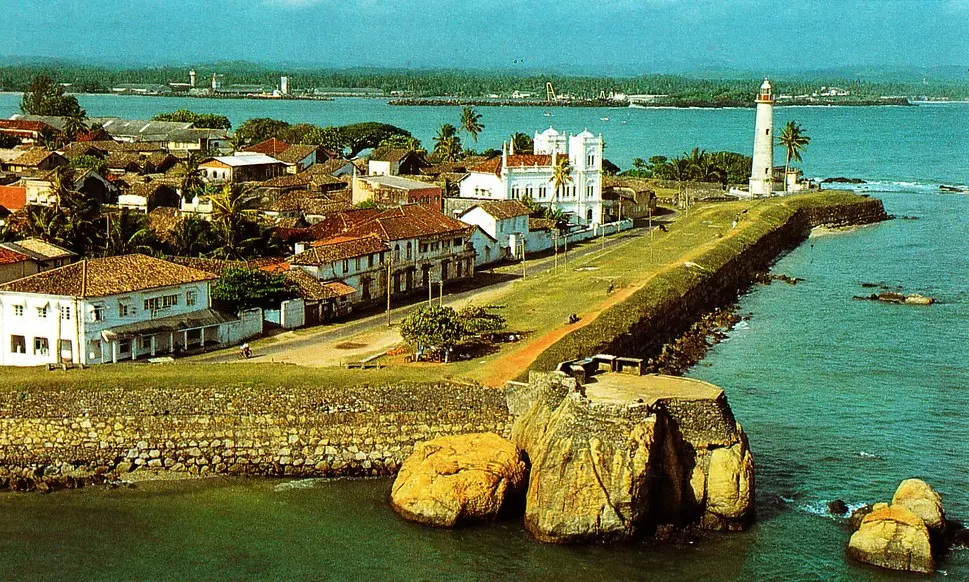
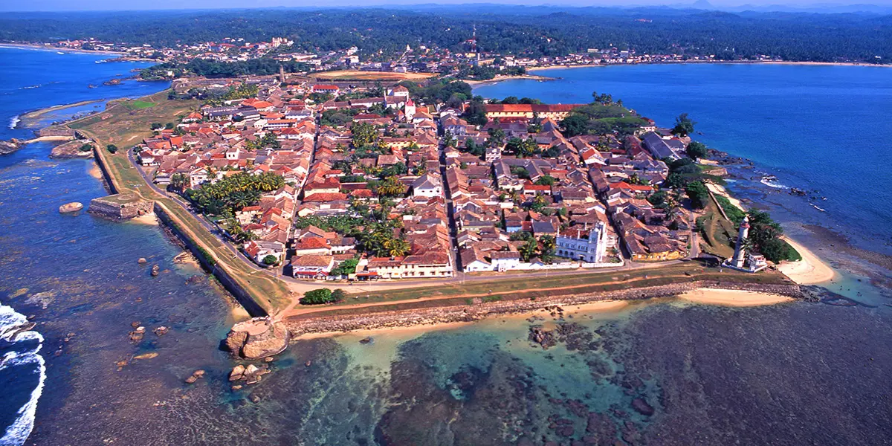

Situated in the southwest of Sri Lanka about 100 km south of Colombo, the city of Galle is on the shores of the Indian Ocean.
It is constructed on a rocky peninsula which houses a natural port to which access is complicated by the presence of massive coral reefs.
History
The Bay of Galle has been used since ancient times.
Known to exist in 545, it protects one of the oldest commercial ports of the Levant.
In the 14th century, Galle port was one of the most active in Sri Lanka.
In 1505, the Portuguese settled on the island.
They established a trading post in Galle in 1507, and constructed the small fort of Santa Cruz.
At the end of the 16th century, after moving temporarily to Colombo, they returned to Galle and erected a rampart at the north end of the peninsula, on the side of the isthmus.
In 1625, when the island was threatened by the Dutch, they added three bastions to this rampart.

What to See?
Galle Dutch Fort
Dutch Reformed Church
National Museum of Galle
Jungle Beach
Japanese Peach Pangoda
Old Gate, Galle Fort
Sea Turtle Hatchery

Urban Morphology
Since the 18th century, Galle has had the appearance of a fortified stronghold.
Fourteen bastions are integrated into the wall and a drawbridge protects the fortified fort at the city's north end.
Other buildings of military character the official residence, the arsenal, the powder depot were carefully located inside the enclosure.
Commercial and storage buildings can also be found near the port.
The dwellings built by the Dutch, with their dressed stone walls and large doors, embellish Galle's quiet streets to this day.